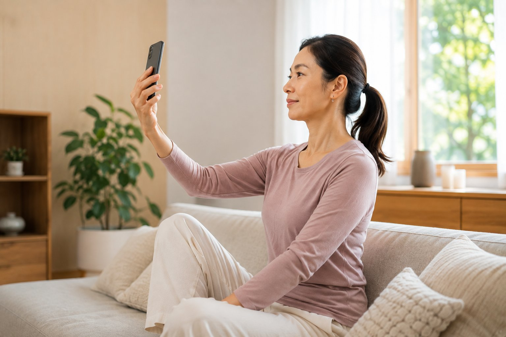

滑手機怎麼拿比較省力？通勤與沙發的支點選法

在捷運上回完幾則訊息，手機才剛放下，肩膀像終於可以鬆口氣。回家窩進沙發，又換成另一種手臂和脖子都懸著的拿法。
滑手機時，手機位置會影響頭與視線的角度，手肘有沒有支點也會影響肩頸用力感。通勤若能坐穩，可先把前臂靠在腿上；在家可用靠墊托住手肘。選能看清楚、能換姿勢的拿法，比追求固定角度實用。單靠低頭角度不能估算個人頸部負荷或判定症狀原因。
通勤滑手機，怎麼拿比較不費力？
坐穩時，可以把前臂靠在大腿或隨身包上，再調整螢幕距離和字級。站著時先顧好扶手和周圍環境，有需要就先把手機收起來。若你注意到的是脖子後面有原因不明的凸起，不要從用手機的時間推論原因。
👆 手機版可左右滑動
| 手機場景 | 可以試的支點 | 觀察什麼 |
|---|---|---|
| 搭車坐著 | 前臂放在大腿或隨身包上。 | 螢幕能否看清楚、手肘是否懸空。 |
| 窩在沙發 | 以抱枕或扶手托住前臂。 | 換一個拿法後，肩膀是否比較不必抬起。 |
| 在桌前看訊息 | 試用手機架、調整字級和距離。 | 能否看清楚並自在換姿勢。 |
在沙發或桌前，怎麼找手肘支點？
在沙發可用靠墊承托前臂；在桌邊可以把手機架起、讓手臂有地方放。看一陣子後可以放下手機、換個坐法。從手機換到電腦時，若只想在兩場會之間活動一下，可讀辦公室的短休息做法。
常見問題
手機一定要拿到眼睛正前方嗎？
可依視線、支點和環境調整，重點是能看清楚、肩膀不必長時間硬抬。
低頭幾度就會傷頸椎嗎？
單一角度不足以判斷個人風險，使用時間、活動情境和當下感受也值得留意。
手撐久後肩頸又緊怎麼辦？
可先放下手機，換一下視線和手臂位置。若持續或加劇，再向醫療專業人員詢問。
先記下最有感的日常時刻
先記下一個最容易滑到肩頸緊的時刻，再看看換個支點有沒有不同。
約 2 分鐘，免登入、免加 LINE。做完可用 3 天觀察卡整理日常感受。
開始免費 2 分鐘體態訊號掃描 →延伸閱讀 接著看在工位怎麼短暫換姿勢